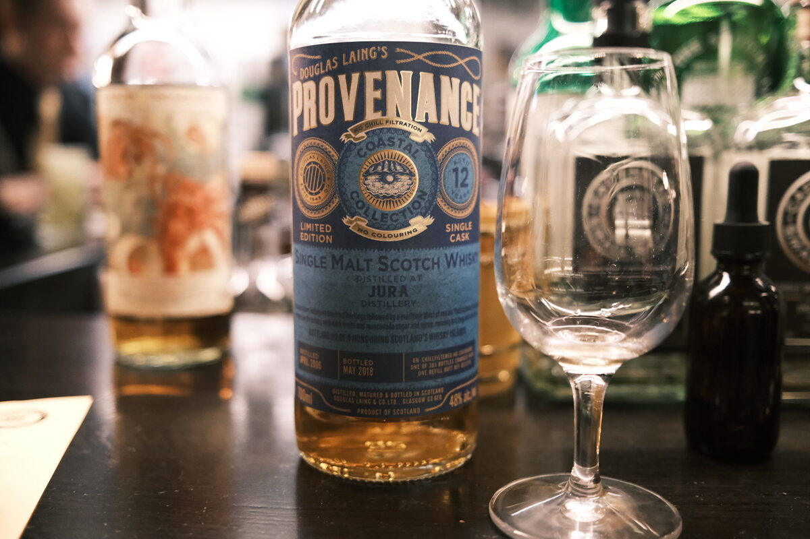

Jura 2006 Douglas Laing 12 years 48% (refill butt)
Provenance series. Presumably a refill sherry butt. Are we ready to find a hidden underrated gem?
Colour Straw.
Nose Dried fruits and oak. Cucumber. Super hot, even after a lot of rest. Cinnamon and vanilla. Cherry ripe. With water, watermelon rind.
Palate Malty. Dried fruits. Quite hot and spicy. Oak. Brown sugar sweetness. A little grassy. Watery texture. With water, a bit of caramel.
Finish Moderate, sharp. Malty and a little herbal, rosewater. With water, some stemminess.
Comments Sorry, no, we’re not ready. Middle of the road, sort of boring. 79/100.

Posted by Dominic on 14 Jun 2021